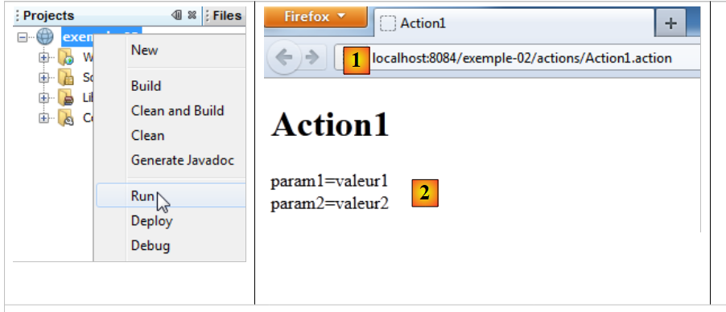
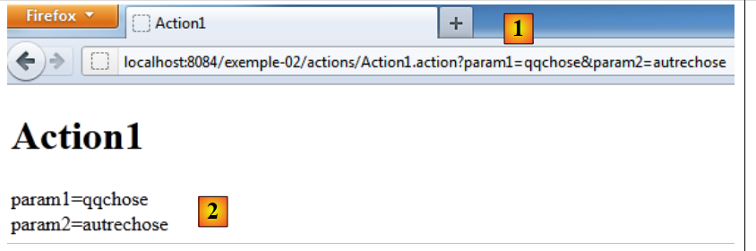

3. المثال 02 – حقن المعلمات في الإجراء
3.1. مشروع NetBeans
 |
- في [1،2]، وملفات التكوين
- في [3]، الإجراء
- في [4]، طريقة العرض
- في [5]، ومكتبات المشروع
3.2. ملفات التكوين
ملف [web.xml] هو كما يلي:
<?xml version="1.0" encoding="UTF-8"?>
<web-app xmlns="http://java.sun.com/xml/ns/javaee"
xmlns:xsi="http://www.w3.org/2001/XMLSchema-instance"
xsi:schemaLocation="http://java.sun.com/xml/ns/javaee http://java.sun.com/xml/ns/javaee/web-app_3_0.xsd"
version="3.0">
<display-name>Struts tuto-001</display-name>
<filter>
<filter-name>struts2</filter-name>
<filter-class>org.apache.struts2.dispatcher.FilterDispatcher</filter-class>
</filter>
<filter-mapping>
<filter-name>struts2</filter-name>
<url-pattern>/*</url-pattern>
</filter-mapping>
<session-config>
<session-timeout>
30
</session-timeout>
</session-config>
</web-app>
لقد سبق أن علقنا على هذا الملف. ولن نكرر ذلك مرة أخرى. فقط تذكر أنه يضمن مرور جميع عناوين URL (السطر 15) عبر مرشح Struts (السطر 10).
ملف [struts.xml] هو كما يلي:
<?xml version="1.0" encoding="UTF-8" ?>
<!DOCTYPE struts PUBLIC
"-//Apache Software Foundation//DTD Struts Configuration 2.0//EN"
"http://struts.apache.org/dtds/struts-2.0.dtd">
<struts>
<package name="default" namespace="/" extends="struts-default">
<default-action-ref name="index" />
<action name="index">
<result type="redirectAction">
<param name="actionName">Action1</param>
<param name="namespace">/actions</param>
</result>
</action>
</package>
<package name="actions" namespace="/actions" extends="struts-default">
<action name="Action1" class="actions.Action1">
<result name="success">/vues/Action1.jsp</result>
</action>
</package>
</struts>
- الأسطر 7–15: تحدد الحزمة [default]، التي تُستخدم عندما يتعذر العثور على إجراء في حزمة أخرى.
- السطر 8: يحدد إجراءً افتراضيًا لهذه الحزمة باسم index.
- الأسطر 9-14: تكوين الإجراء المسمى index. لاحظ أنه غير مرتبط بفئة (السمة class مفقودة في السطر 9).
- السطر 10: النتيجة هي لمفتاح النجاح (السمة name مفقودة). وهي من النوع redirectAction (السمة type). يسمح هذا النوع بإعادة توجيه إجراء إلى إجراء آخر. هنا، عندما يطلب العميل الإجراء /index، سيتم إعادة توجيهه إلى الإجراء /actions/Action1 (الأسطر 11-12).
- الأسطر 16-20: تعريف حزمة الإجراءات (name) المرتبطة بالإجراءات في عنوان URL /actions/Action (class).
- الأسطر 17–19: تكوين الإجراء /actions/Action1 (name). عند استدعاء هذا الإجراء، سيقوم Struts بإنشاء مثيل لفئة actions.Action1 (class)، ثم سيتم تنفيذ طريقة execute لتلك الفئة. يجب أن تُرجع هذه الطريقة مفتاح "success"، لأنه المفتاح الوحيد المُعرَّف في السطر 18.
- السطر 18: بالنسبة لمفتاح success، ستكون طريقة العرض التي سيتم عرضها هي صفحة JSP [vues/Action1.jsp].
في النهاية، يجب أن نلاحظ أن مشروع Struts لا يمكنه تنفيذ الإجراء إلا على عنوان URL [actions/Action1].
3.3. الإجراء
يتم تمثيل الإجراء Action1 بالفئة التالية:
package actions;
import com.opensymphony.xwork2.ActionSupport;
public class Action1 extends ActionSupport{
// action model
private String param1="valeur1";
private String param2="valeur2";
@Override
public String execute(){
return SUCCESS;
}
// getters and setters
public String getParam1() {
return param1;
}
public void setParam1(String param1) {
this.param1 = param1;
}
public String getParam2() {
return param2;
}
public void setParam2(String param2) {
this.param2 = param2;
}
}
- السطران 8-9: حقلان يمكن الوصول إليهما عبر طرق get/set (السطور 18-32)
- الأسطر 12–14: تُرجع طريقة execute المفتاح كما هو متوقع. ولا تفعل أي شيء آخر.
3.4. طريقة العرض JSP
عرض Action1.jsp كما يلي:
<%@page contentType="text/html" pageEncoding="UTF-8"%>
<%@ taglib prefix="s" uri="/struts-tags" %>
<!DOCTYPE html>
<html>
<head>
<meta http-equiv="Content-Type" content="text/html; charset=UTF-8">
<title>Action1</title>
</head>
<body>
<h1>Action1</h1>
param1=<s:property value="param1"/><br/>
param2=<s:property value="param2"/><br/>
</body>
</html>
يتم عرض هذا العرض بعد تنفيذ الأسلوب [Action1].execute. وهو يعرض قيم حقول param1 (السطر 11) و param2 (السطر 19) لفئة [Action1].
3.5. الاختبارات
دعونا نقوم بتشغيل مشروع [example-02]:
 |
- في [1]، عنوان URL المطلوب. لاحظ أن عنوان URL المطلوب في البداية كان [/example-02] بدون إجراء. ثم تم استخدام ملفَي [web.xml] و[struts.xml]. رأينا أن ملف [web.xml] عهد بمعالجة جميع الطلبات إلى Struts 2. ثم تم استخدام ملف [struts.xml]:
<struts>
<package name="default" namespace="/" extends="struts-default">
<default-action-ref name="index" />
<action name="index">
<result type="redirectAction">
<param name="actionName">Action1</param>
<param name="namespace">/actions</param>
</result>
</action>
</package>
<package name="actions" namespace="/actions" extends="struts-default">
<action name="Action1" class="actions.Action1">
<result name="success">/vues/Action1.jsp</result>
</action>
</package>
</struts>
تمت معالجة عنوان URL [/example-02] بدون إجراء بواسطة الحزمة الافتراضية في الأسطر 2–10. ونظرًا لعدم وجود إجراء في عنوان URL، أصبح الإجراء "index" وفقًا للسطر 3 (الإجراء الافتراضي). تسببت الأسطر 4–8 في قيام Struts بإرجاع عنوان URL لإعادة التوجيه [/example-02/actions/Action1] إلى العميل، كما هو موضح في [1].
ثم تم تنفيذ الإجراء [Action1] كما تم تكوينه في الأسطر 12-14. تم تنفيذ طريقة التنفيذ الخاصة به. رأينا أنه أعاد رمز النجاح. تسبب السطر 13 من [struts.xml] في إعادة الصفحة [/views/Action1.jsp] إلى المتصفح:
...
<html>
<head>
<meta http-equiv="Content-Type" content="text/html; charset=UTF-8">
<title>Action1</title>
</head>
<body>
<h1>Action1</h1>
param1=<s:property value="param1"/><br/>
param2=<s:property value="param2"/><br/>
</body>
</html>
عرضت السطران 9 و 10 قيم حقول param1 و param2 من [Action1]. ويظهر ذلك في [2].
دعونا نطلب عنوان URL آخر:
 |
في [1]، يتم طلب الإجراء [Action1] بالمعلمات param1 و param2. لنعد إلى مسار تنفيذ إجراء Struts:
 |
يقوم وحدة التحكم [FilterDispatcher] بتنفيذ طريقة execute الخاصة بالإجراء. يمر تدفق التنفيذ عبر المعترضات. يقوم أحدها بمعالجة سلسلة المعلمات param1=something¶m2=somethingelse . ثم يستخدم طريقتي setParam1 و setParam2 الخاصتين بإجراء Action1:
package actions;
import com.opensymphony.xwork2.ActionSupport;
public class Action1 extends ActionSupport{
// action model
private String param1="valeur1";
private String param2="valeur2";
@Override
public String execute(){
return SUCCESS;
}
// getters and setters
public String getParam1() {
return param1;
}
public void setParam1(String param1) {
this.param1 = param1;
}
public String getParam2() {
return param2;
}
public void setParam2(String param2) {
this.param2 = param2;
}
}
يقوم معترض params بتنفيذ الطرق التالية:
لذلك، يجب أن تكون موجودة. لاحظ ما يلي: لاسترداد المعلمات من طلب HTTP، يجب أن تحتوي إجراء Struts الذي تم استدعاؤه على حقول تحمل نفس أسماء المعلمات وطرق get/set المرتبطة بها.
عند تشغيل طريقة execute الخاصة بـ [Action1]، يتم تهيئة الحقول param1 و param2 بواسطة مانع params:
تُرجع طريقة التنفيذ مفتاح النجاح، ويتم عرض صفحة [Action1.jsp] بالقيم الجديدة لـ param1 و param2 [2].